Продолжаем изучать элементарные задачи по математике. Сегодня мы поговорим о статистике.
Статистика — это раздел математики в котором изучаются вопросы сбора, измерения и анализа информации, представленной в числовой форме. Происходит слово статистика от латинского слова status (состояние или положение дел).
Так, с помощью статистики мы можем узнать свое положение дел, касающихся финансов. С начала месяца можно вести дневник расходов и по окончании месяца, воспользовавшись статистикой, узнать сколько денег в среднем мы тратили каждый день или какая потраченная сумма была наибольшей в этом месяце либо узнать какую сумму мы тратили наиболее часто.
На основе этой информации можно провести анализ и сделать определенные выводы: следует ли в следующем месяце немного сбавить аппетит, чтобы тратить меньше денег, либо наоборот позволить себе не только хлеб с водой, но и колбасу.
Содержание урока- Выборка. Объем. Размах
- Среднее арифметическое
- Средняя скорость движения
- Мода и медиана
- Частота
- Относительная частота
Выборка. Объем. Размах
Что такое выборка? Если говорить простым языком, то это отобранная нами информация для исследования. Например, мы можем сформировать следующую выборку — суммы денег, потраченных в каждый из шести дней. Давайте нарисуем таблицу в которую занесем расходы за шесть дней
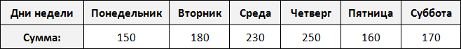
Выборка состоит из n-элементов. Вместо переменной n может стоять любое число. У нас имеется шесть элементов, поэтому переменная n равна 6
\[n = 6\]
Элементы выборки обозначаются с помощью переменных с индексами
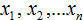
. Последний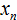
элемент является шестым элементом выборки, поэтому вместо n будет стоять число 6.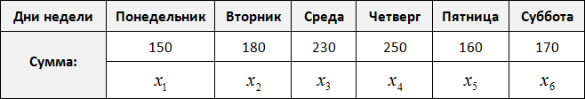
Обозначим элементы нашей выборки через переменные
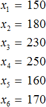
Количество элементов выборки называют объемом выборки. В нашем случае объем равен шести.
Размахом выборки называют разницу между самым большим и маленьким элементом выборки.
В нашем случае, самым большим элементом выборки является элемент 250, а самым маленьким — элемент 150. Разница между ними равна 100
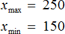
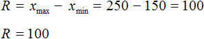
Среднее арифметическое
Понятие среднего значения часто используется в повседневной жизни.
Примеры:
- средняя зарплата жителей страны;
- средний балл учащихся;
- средняя скорость движения;
- средняя производительность труда.
Речь идет о среднем арифметическом — результате деления суммы элементов выборки на их количество.
Среднее арифметическое — это результат деления суммы элементов выборки на их количество.
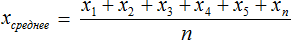
Вернемся к нашему примеру
Узнаем сколько в среднем мы тратили в каждом из шести дней:
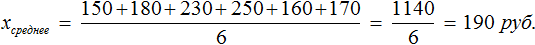
Средняя скорость движения
При изучении задач на движение мы определяли скорость движения следующим образом: делили пройденное расстояние на время. Но тогда подразумевалось, что тело движется с постоянной скоростью, которая не менялась на протяжении всего пути.
В реальности, это происходит довольно редко или не происходит совсем. Тело, как правило, движется с различной скоростью.
Когда мы ездим на автомобиле или велосипеде, наша скорость часто меняется. Когда впереди нас помехи, нам приходиться сбавлять скорость. Когда же трасса свободна, мы ускоряемся. При этом за время нашего ускорения скорость изменяется несколько раз.
Речь идет о средней скорости движения. Чтобы её определить нужно сложить скорости движения, которые были в каждом часе/минуте/секунде и результат разделить на время движения.
Задача 1. Автомобиль первые 3 часа двигался со скоростью 66,2 км/ч, а следующие 2 часа — со скоростью 78,4 км/ч. С какой средней скоростью он ехал?
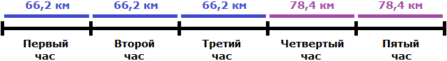
Сложим скорости, которые были у автомобиля в каждом часе и разделим на время движения (5ч)
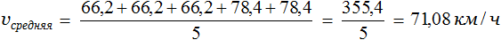
Значит автомобиль ехал со средней скоростью 71,08 км/ч.
Определять среднюю скорость можно и по другому — сначала найти расстояния, пройденные с одной скоростью, затем сложить эти расстояния и результат разделить на время. На рисунке видно, что первые три часа скорость у автомобиля не менялась. Тогда можно найти расстояние, пройденное за три часа:
66,2 × 3 = 198,6 км.
Аналогично можно определить расстояние, которое было пройдено со скоростью 78,4 км/ч. В задаче сказано, что с такой скоростью автомобиль двигался 2 часа:
78,4 × 2 = 156,8 км.
Сложим эти расстояния и результат разделим на 5
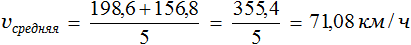
Задача 2. Велосипедист за первый час проехал 12,6 км, а в следующие 2 часа он ехал со скоростью 13,5 км/ч. Определить среднюю скорость велосипедиста.
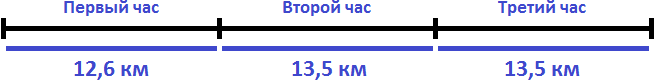
Скорость велосипедиста в первый час составляла 12,6 км/ч. Во второй и третий час он ехал со скоростью 13,5. Определим среднюю скорость движения велосипедиста:
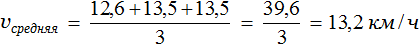
Мода и медиана
Модой называют элемент, который встречается в выборке чаще других.
Рассмотрим следующую выборку: шестеро спортсменов, а также время в секундах за которое они пробегают 100 метров
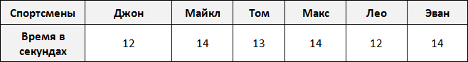
Элемент 14 встречается в выборке чаще других, поэтому элемент 14 назовем модой.
Рассмотрим еще одну выборку. Тех же спортсменов, а также смартфоны, которые им принадлежат
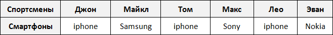
Элемент iphone встречается в выборке чаще других, значит элемент iphone является модой. Говоря простым языком, носить iphone модно.
Конечно элементы выборки в этот раз выражены не числами, а другими объектами (смартфонами), но для общего представления о моде этот пример вполне приемлем.
Рассмотрим следующую выборку: семеро спортсменов, а также их рост в сантиметрах:
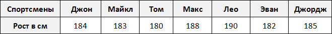
Упорядочим данные в таблице так, чтобы рост спортсменов шел по возрастанию. Другими словами, построим спортсменов по росту:
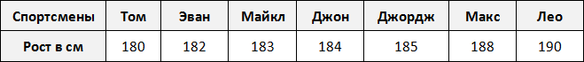
Выпишем рост спортсменов отдельно:
180, 182, 183, 184, 185, 188, 190
В получившейся выборке 7 элементов. Посередине этой выборки располагается элемент 184. Слева и справа от него по три элемента. Такой элемент как 184 называют медианой упорядоченной выборки.
Медианой упорядоченной выборки называют элемент, располагающийся посередине.
Отметим, что данное определение справедливо в случае, если количество элементов упорядоченной выборки является нечётным.
В рассмотренном выше примере, количество элементов упорядоченной выборки было нечётным. Это позволило нам быстро указать медиану
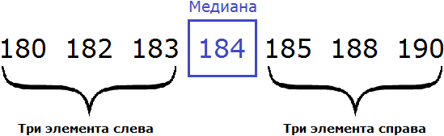
Но возможны случаи, когда количество элементов выборки чётно.
К примеру, рассмотрим выборку в которой не семеро спортсменов, а шестеро:
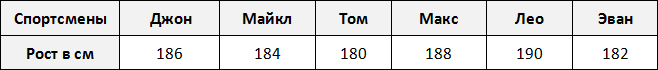
Построим этих шестерых спортсменов по росту:
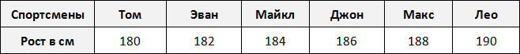
Выпишем рост спортсменов отдельно:
180, 182, 184, 186, 188, 190
В данной выборке не получается указать элемент, который находился бы посередине. Если указать элемент 184 как медиану, то слева от этого элемента будут располагаться два элемента, а справа — три. Если как медиану указать элемент 186, то слева от этого элемента будут располагаться три элемента, а справа — два.
В таких случаях для определения медианы выборки, нужно взять два элемента выборки, находящихся посередине и найти их среднее арифметическое. Полученный результат будет являться медианой.
Вернемся к нашим спортсменам. В упорядоченной выборке 180, 182, 184, 186, 188, 190 посередине располагаются элементы 184 и 186
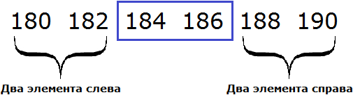
Найдем среднее арифметическое элементов 184 и 186
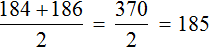
Элемент 185 является медианой выборки, несмотря на то, что этот элемент не является членом исходной и упорядоченной выборки. Спортсмена с ростом 185 нет среди остальных спортсменов. Рост в 185 см используется в данном случае для статистики, чтобы можно было сказать о том, что срединный рост спортсменов составляет 185 см.
Поэтому более точное определение медианы зависит от количества элементов в выборке.
Если количество элементов упорядоченной выборки нечётно, то медианой выборки называют элемент, располагающийся посередине.
Если количество элементов упорядоченной выборки чётно, то медианой выборки называют среднее арифметическое двух чисел, располагающихся посередине этой выборки.
Медиана и среднее арифметическое по сути являются «близкими родственниками», поскольку и то и другое используют для определения среднего значения. Например, для предыдущей упорядоченной выборки 180, 182, 184, 186, 188, 190 мы определили медиану, равную 185. Этот же результат можно получить путем определения среднего арифметического элементов 180, 182, 184, 186, 188, 190
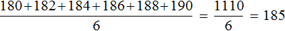
Но медиана в некоторых случаях отражает более реальную ситуацию. Например, рассмотрим следующий пример:
Было подсчитано количество имеющихся очков у каждого спортсмена. В результате получилась следующая выборка:
0, 1, 1, 1, 2, 1, 2, 3, 5, 4, 5, 0, 1, 6, 1
Определим среднее арифметическое для данной выборки — получим значение 2,2
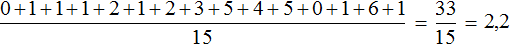
По данному значению можно сказать, что в среднем у спортсменов 2,2 очка
Теперь определим медиану для этой же выборки. Упорядочим элементы выборки и укажем элемент, находящийся посередине:
0, 0, 1, 1, 1, 1, 1, 1, 2, 2, 3, 4, 5, 5, 6
В данном примере медиана лучше отражает реальную ситуацию, поскольку половина спортсменов имеет не более одного очка.
Частота
Частота это число, которое показывает сколько раз в выборке встречается тот или иной элемент.
Предположим, что в школе проходят соревнования по подтягиваниям. В соревнованиях участвует 36 школьников. Составим таблицу в которую будем заносить число подтягиваний, а также число участников, которые выполнили столько подтягиваний.
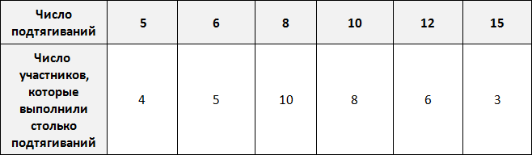
По таблице можно узнать сколько человек выполнило 5, 10 или 15 подтягиваний. Так, 5 подтягиваний выполнили четыре человека, 10 подтягиваний выполнили восемь человек, 15 подтягиваний выполнили три человека.
Количество человек, повторяющих одно и то же число подтягиваний в данном случае являются частотой. Поэтому вторую строку таблицы переименуем в название «частота»:
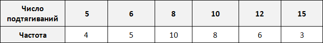
Такие таблицы называют таблицами частот.
Частота обладает следующим свойством: сумма частот равна общему числу данных в выборке.
Это означает, что сумма частот равна общему числу школьников, участвующих в соревнованиях, то есть тридцати шести. Проверим так ли это. Сложим частоты, приведенные в таблице:
\[4 + 5 + 10 + 8 + 6 + 3 = 36\]
Относительная частота
Относительная частота это в принципе та же самая частота, которая была рассмотрена ранее, но только выраженная в процентах.
Относительная частота равна отношению частоты на общее число элементов выборки.
Вернемся к нашей таблице:
Пять подтягиваний выполнили 4 человека из 36. Шесть подтягиваний выполнили 5 человек из 36. Восемь подтягиваний выполнили 10 человек из 36 и так далее. Давайте заполним таблицу с помощью таких отношений:
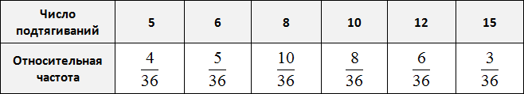
Выполним деление в этих дробях:
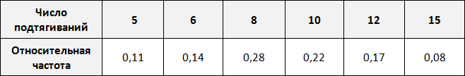
Выразим эти частоты в процентах. Для этого умножим их на 100. Умножение на 100 удобно выполнить передвижением запятой на две цифры вправо:
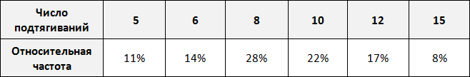
Теперь можно сказать, что пять подтягиваний выполнили 11% участников, 6 подтягиваний выполнили 14% участников, 8 подтягиваний выполнили 28% участников и так далее.